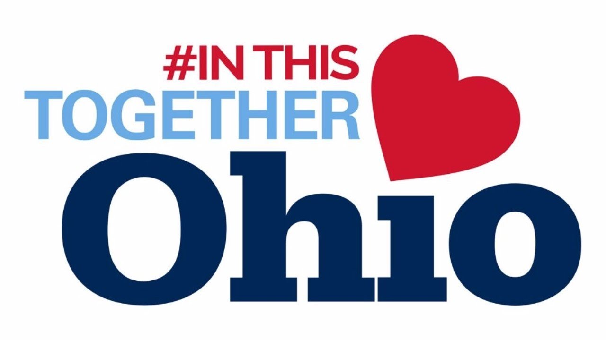
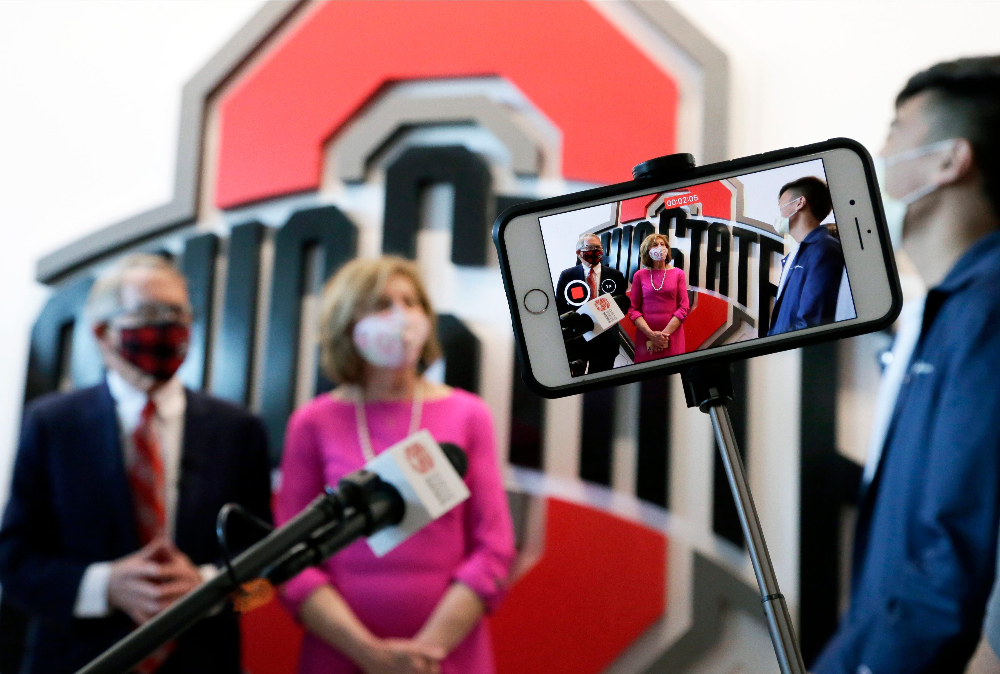
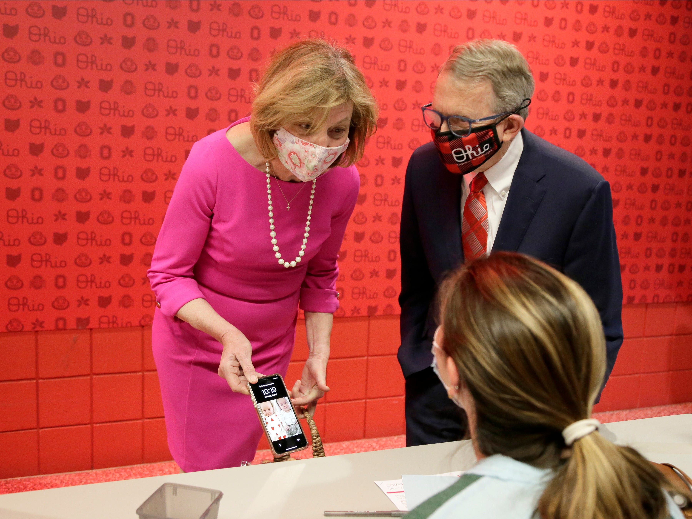

New Ohio order: No capacity limit on outdoor events; but masks, distancing still required


CLARIFICATION: The Ohio Department of Health is consolidating 18 COVID-19 health orders, but several others remain.COLUMBUS – Ohio consolidated many of its health orders into one, but masks and social distancing will still be required, Gov.Mike DeWine said Monday.
The new health order issued Monday focuses on four priorities: wearing masks, maintaining distance, washing hands and spending more time outside rather than inside.
Read the full order below
'If we can keep those things in mind, those four things, we're going to be able to do about anything we want to do this summer,' DeWine said.'People are tired.They've been at this for a year and so it has to be simple.'
The only capacity limits will be at indoor events, which are restricted to 25% unless an exception (variance) has been approved.
Large outdoor events such as festivals, graduations and sporting events can occur, but Ohioans should keep their groups to 10 people or fewer, health department director Stephanie McCloud said.
Just as spacing will reduce the number of people inside restaurants, outdoor events won't be limited to a certain capacity but proper spacing will reduce the number of people who can attend.
This consolidation eliminated 18 health orders but some remain, such as requirements that K-12 students and childcare workers wear masks.
DeWine previously set a threshold for eliminating all health orders: 50 new COVID-19 cases per 100,000 residents during two weeks.That rate was 167.1 on Thursday, up from 146.9 the week before.DeWine's facing a ticking clock: lawmakers could rescind health orders in a couple of months once Senate Bill 22 takes effect.
DeWine said his decision to consolidate health orders had nothing to do with Ohio's GOP-controlled Legislature.
DeWine visited Ohio State University's Schottenstein Center Monday as the state started a push to vaccinate college students against COVID-19.
The goal: offer COVID-19 vaccines to as many college students as possible before they return home from school.Ohio will provide the single-dose Johnson Johnson vaccine on campuses statewide.
Younger people are much less likely to die or be hospitalized from COVID-19, but they can still carry the virus to more susceptible people, DeWine said.'It's not a no-risk situation.'
Sydney Meade, 20, of Toledo, contracted COVID-19 in June.Mead said she had a high fever, was sick for four days and lost seven pounds.
'Luckily, I didn't have to be hospitalized or anything and I recovered pretty quickly, but it was not fun while I was in it,' she said.
Chris Petrilla, 22, of Medina, said getting the vaccine will help protect people around him.
'This past year for a lot of the seniors hasn't been what we expected and I hope that by next year, by vaccinating, we can all contribute to help make it seem a little bit more normal,' he said.
As of Monday, nearly 2.19 million people had been fully vaccinated against COVID-19 in Ohio, about 18.7% of the state.Of those fully vaccinated, about 134,000 were 29 years old or younger, according to Ohio Department of Health data.
Ohio reported 2,918 new COVID-19 cases between Saturday and Monday.No COVID-19 data were reported Sunday because of the holiday.Since the pandemic began, Ohio has reported more than 1 million
DeWine is talking with schools about ways to provide Pfizer vaccines for 16-year-olds and 17-year-olds whose parents approve the shots.Some local childrens' hospitals are providing those vaccines, too.Pfizer is the only vaccine available to those younger than 18.
Ohio is also allowing businesses to set up workplace clinics.
'We have to do everything we can to take it to the people of the state in a way that is convenient for them,' DeWine said.
Ohio is in a race to vaccinate more people as COVID-19 variants continue to spread.Vaccines are effective against the more dangerous variants, such as B.1.1.7.
'It's just much more contagious and that's what we face,' DeWine said.
Posted On: 2021-04-05T13:20:00
Posted By: Jessie Balmert

Content Date: 2021-04-05
Download Date: 2021-04-21
Document ID: L0C04ASC6